From converted DNA to per-CpG methylation calls
DNA methylation biology showed per-CpG methylation levels of GM12878. This lecture shows how such numbers are made, and what can go wrong on the way.
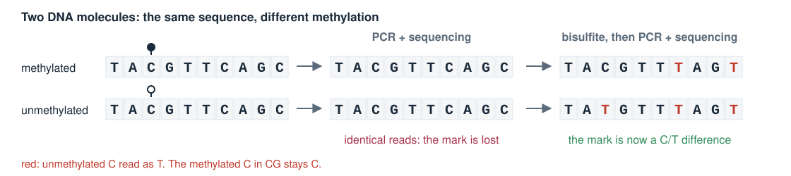
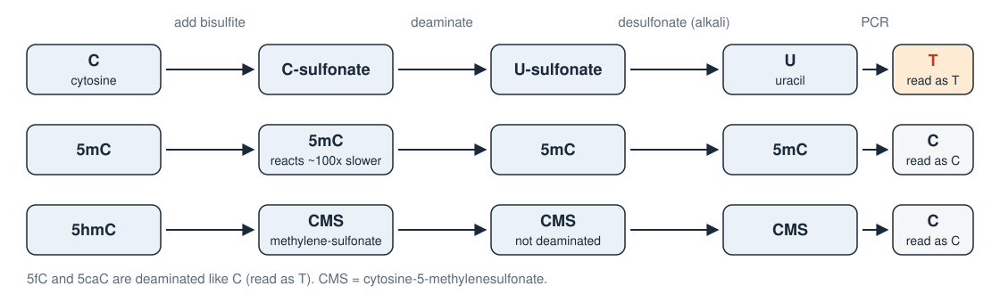
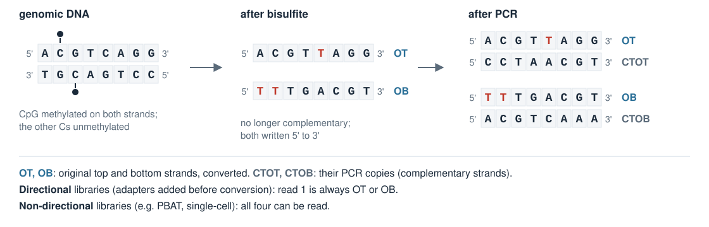
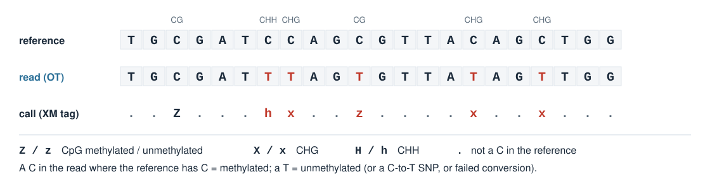
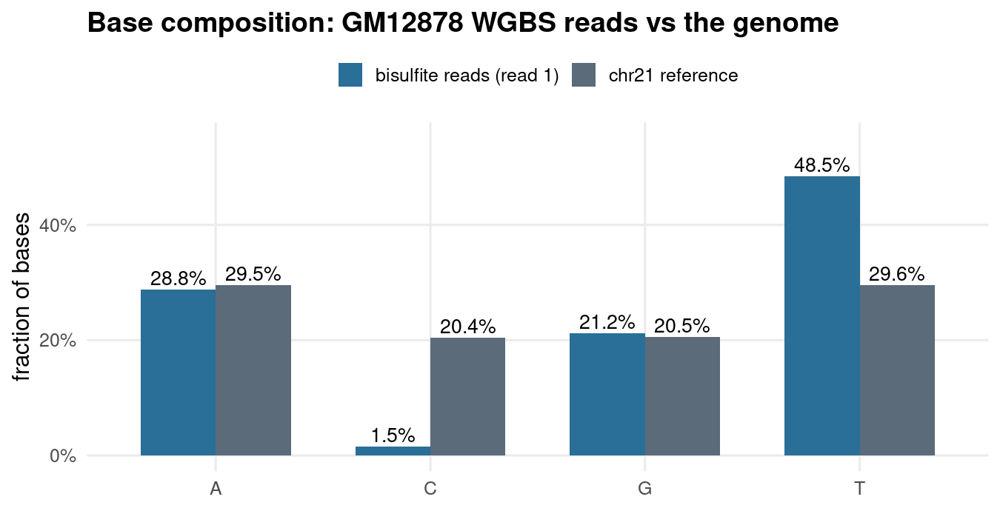
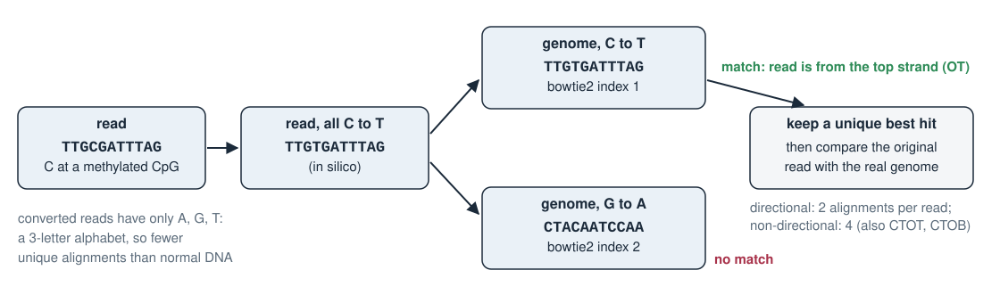
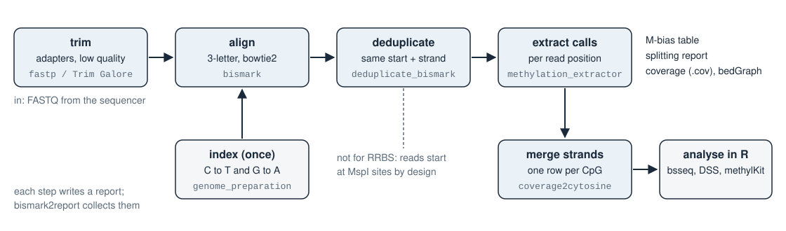
bismark_genome_preparation genome # once per genome
bismark --genome genome trimmed.fastq.gz
deduplicate_bismark --bam trimmed_bismark_bt2.bam
bismark_methylation_extractor --gzip --bedGraph trimmed_bismark_bt2.deduplicated.bam
coverage2cytosine --merge_CpG --genome_folder genome -o gm_cpg *.bismark.cov.gz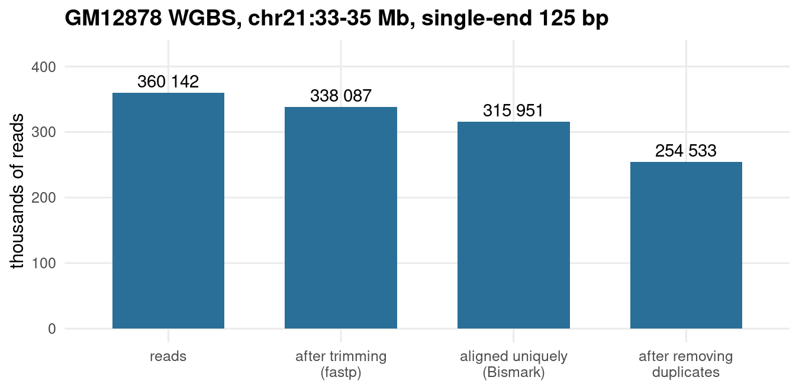
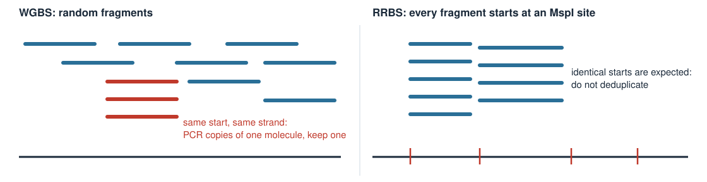
deduplicate_bismark).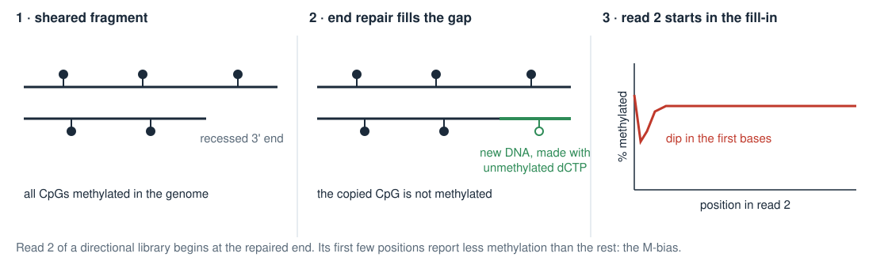
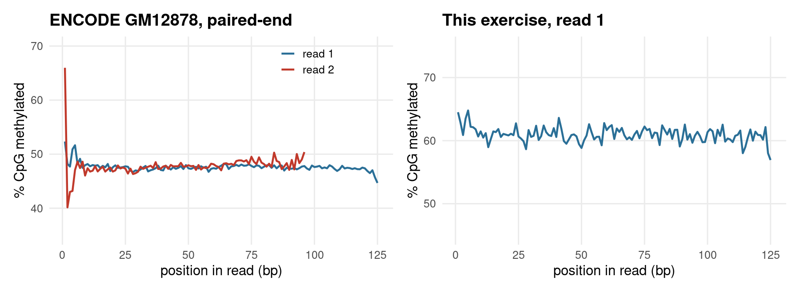
--ignore_r2 4, and check the plot again.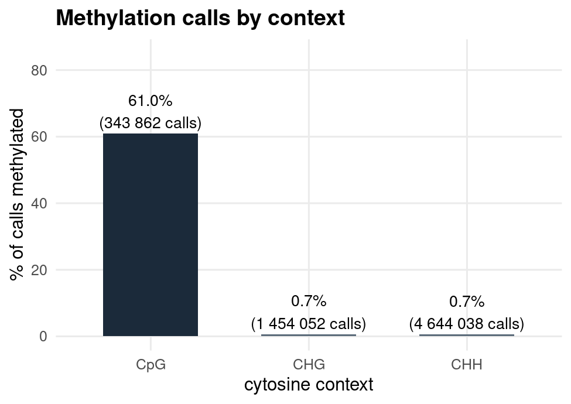
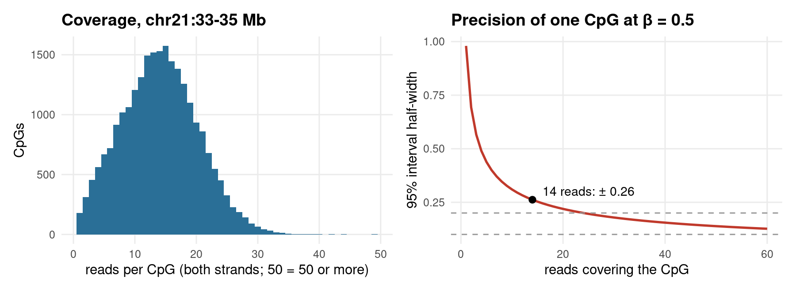
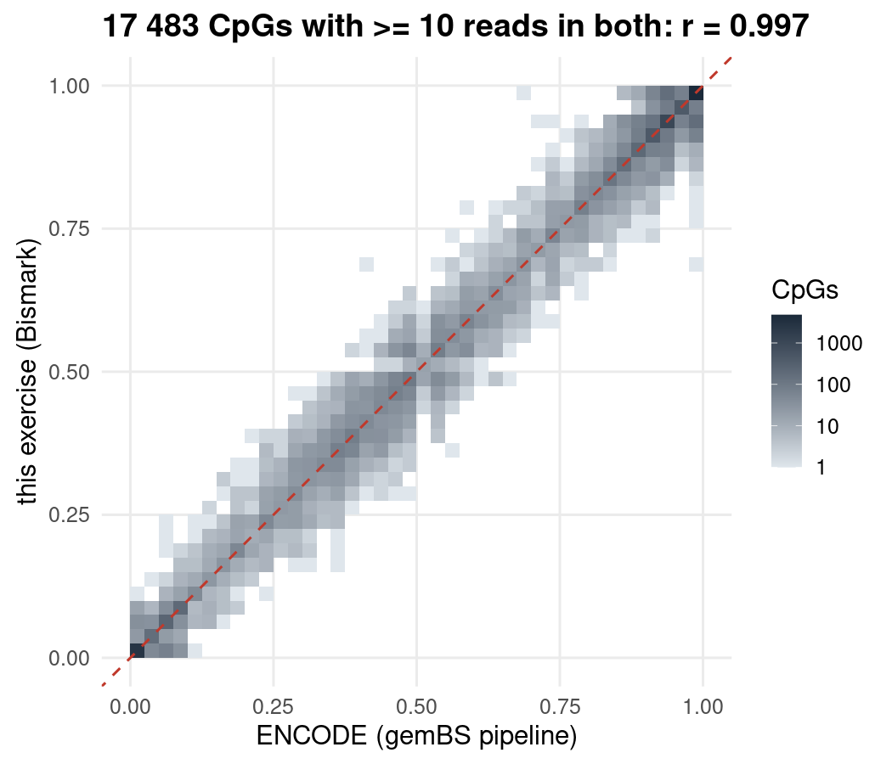
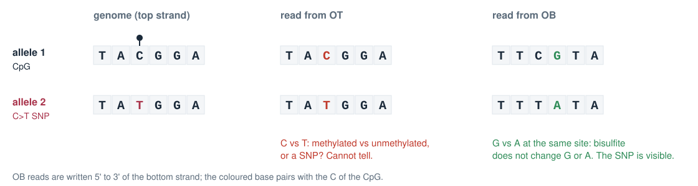
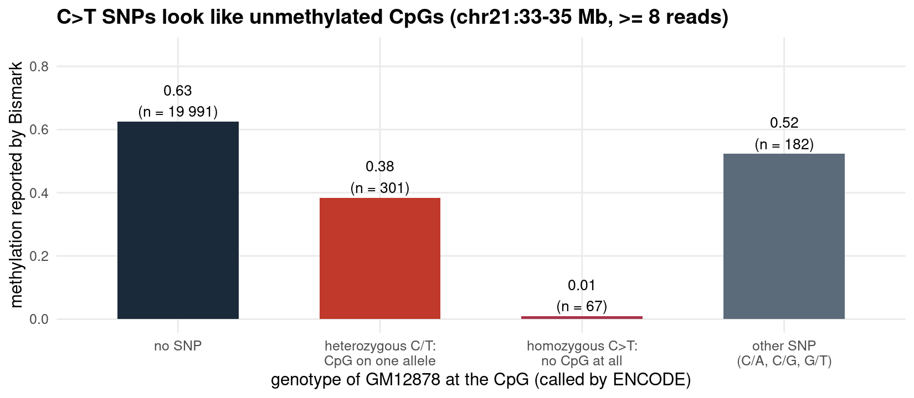
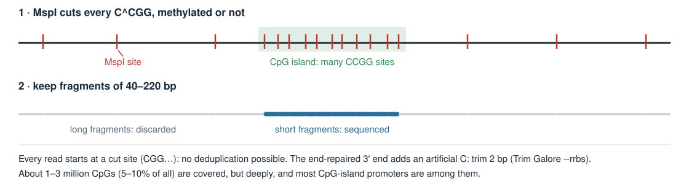
--rrbs, no deduplication, and only regions covered in all samples can be compared.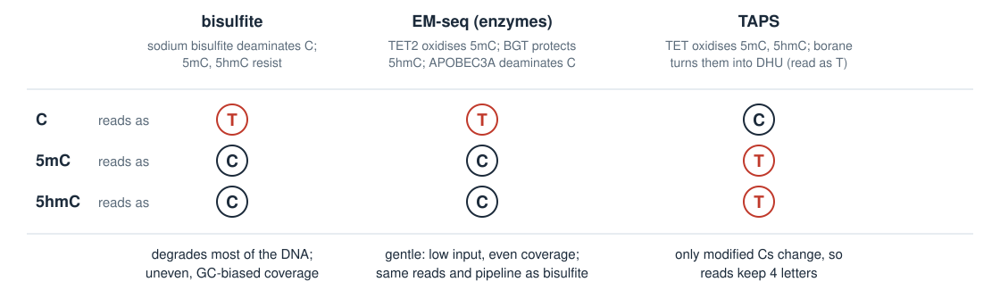
| method | how | 5mC | 5hmC |
|---|---|---|---|
| bisulfite (BS) | standard | C | C |
| oxidative BS (oxBS) | oxidise 5hmC to 5fC first, then BS | C | T |
| TAB-seq | protect 5hmC (glucose), oxidise 5mC with TET, then BS | T | C |
| EM-seq / ACE-seq variants | enzymatic, with or without 5hmC protection | C / T | C |
| nanopore, PacBio | direct signal from the native base | 5mC call | 5hmC call (nanopore) |
| assay | CpGs measured | typical use | cost per sample |
|---|---|---|---|
| WGBS / EM-seq (30x) | ~28 million (all) | reference methylomes, DMRs anywhere, PMDs | high |
| RRBS | 1–3 million, CGI-rich | many samples, promoter methylation | low |
| EPIC array | ~900 000 selected | epidemiology, clinical, clocks | lowest |
| targeted (capture, amplicons) | chosen regions | validation, diagnostics | low |
| nanopore / PacBio | all, on long single molecules | haplotypes, repeats, 5hmC | high |
| format | columns | from |
|---|---|---|
Bismark coverage (.cov) |
chr, start, end, % methylated, count methylated, count unmethylated | bismark_methylation_extractor |
| merged CpG evidence | the same, one row per CpG (both strands) | coverage2cytosine --merge_CpG |
| CpG report | chr, position, strand, count methylated, count unmethylated, context, trinucleotide | --cytosine_report |
| ENCODE bed9+ | BED9 + coverage, % methylated, reference and called context, genotype quality | gemBS (ENCODE4) |
| bedMethyl | BED9 + coverage, % methylated (+ more in modkit’s version) | ENCODE3 pipeline, modkit |
| idea | key fact |
|---|---|
| chemistry | bisulfite: C → U → T; 5mC and 5hmC stay C; DNA is degraded |
| libraries | four strands (OT, OB, CTOT, CTOB); directional kits read OT/OB in read 1 |
| alignment | three-letter: C→T reads against C→T and G→A genomes; unique best hit (Bismark) |
| calls | C = methylated, T = unmethylated at a reference C; β = M/(M+U); merge CpG strands |
| M-bias | end repair makes read-2 starts look unmethylated; ignore those positions |
| conversion | CHH methylation (mammals) or lambda spike-in; here 99.34% |
| duplicates | remove in WGBS, keep in RRBS |
| SNPs | C>T at a CpG looks unmethylated; the other strand shows G/A |
| alternatives | RRBS (CpG-rich subset), EM-seq (same readout, gentle), TAPS (modified C → T) |
| this dataset | 360 142 reads → 254 533; median 14x; r = 0.997 with ENCODE |
Not required reading and not examined. For those who want the primary literature.